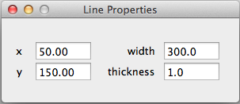
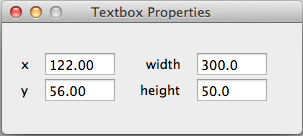
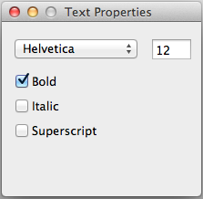
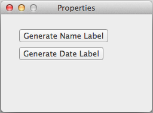

The Properties Panel allows you to configure the worksheet elements that you have incorporated in your worksheet. When you select different worksheet elements the Properties Panel will change depending on what is currently selected.
Properties Panel

The Properties Panel with graph selected
-
Properties Panel with Graph SelectedWhen a graph is selected the user has the options of changing several different configurations on the currently selected graphs. The optional settings include
- Points in the graph
- Equations
- Grid, grid scale, and tick marks
- Maximum and minimum values of x and y axes
Properties Panel with Line Selected

The Properties Panel with line selected
-
The Properties Panel allows the user to change the location, width and thickness of a line.
Properties Panel with Textbox Selected

The Properties Panel with Textbox selected
-
When a textbox is selected, the Properties Panel allows the user to change the location, width and height.
Properties Panel while Editing Text

The Properties Panel while text is being edited
-
If text is being entered into a textbox then the user has the ability to change the font attributes of the currently selected text.
Properties Panel for Worksheet

The Properties Panel showing options for Worksheet